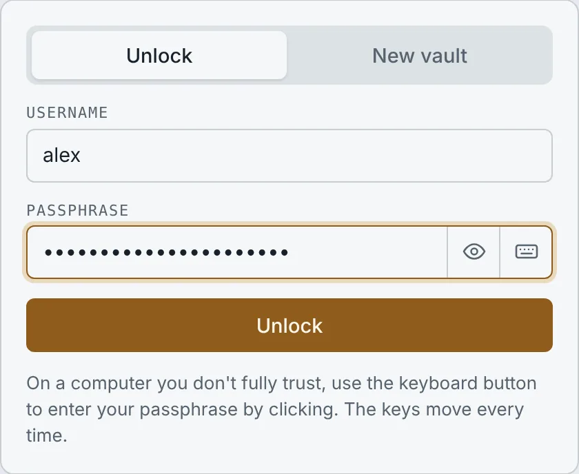
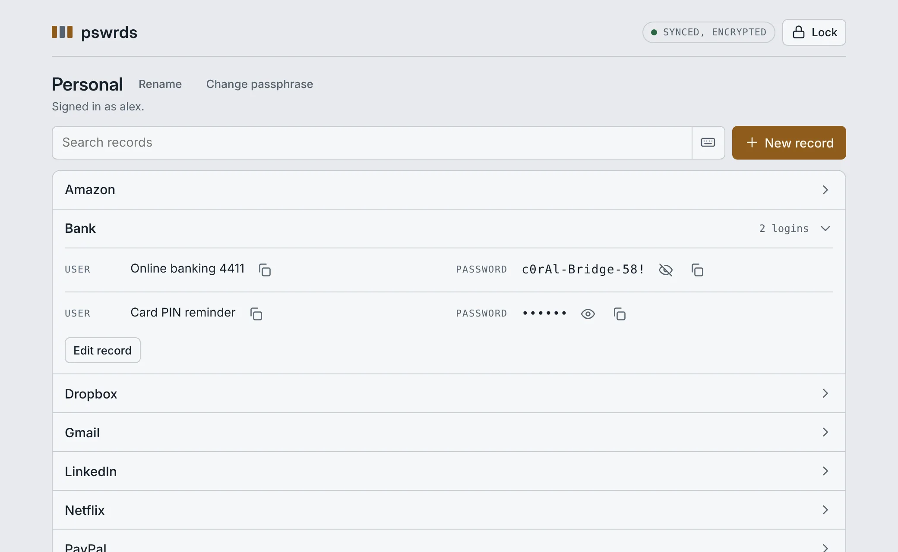
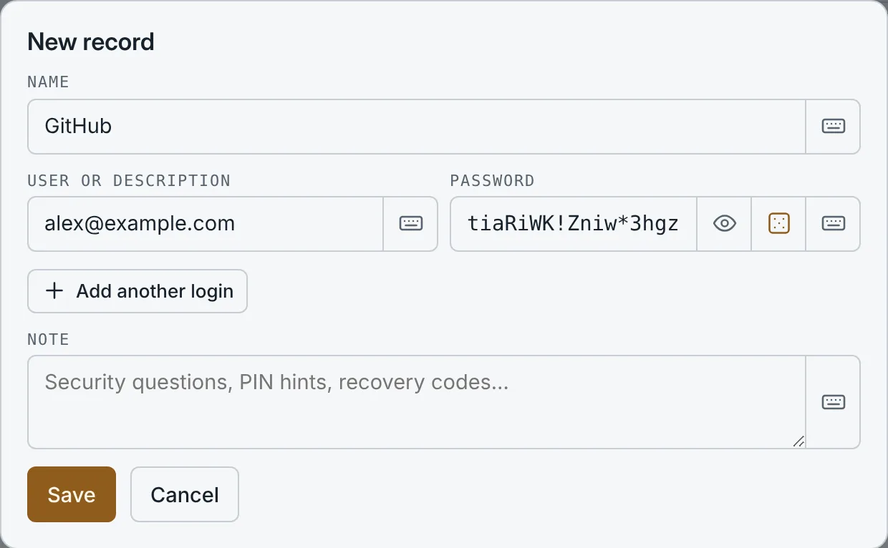
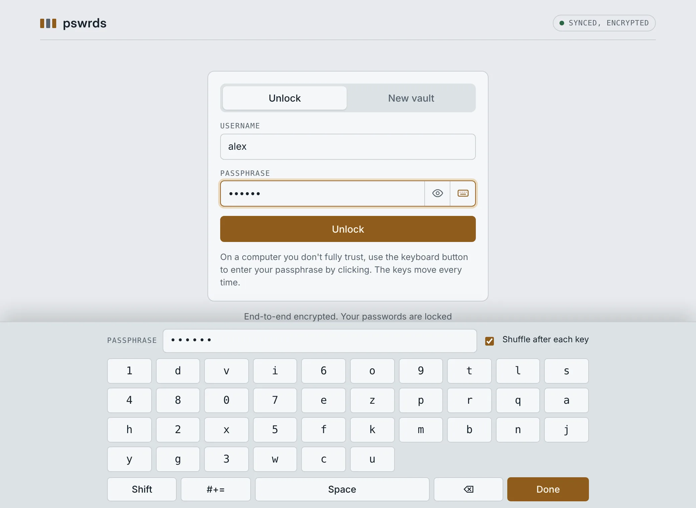
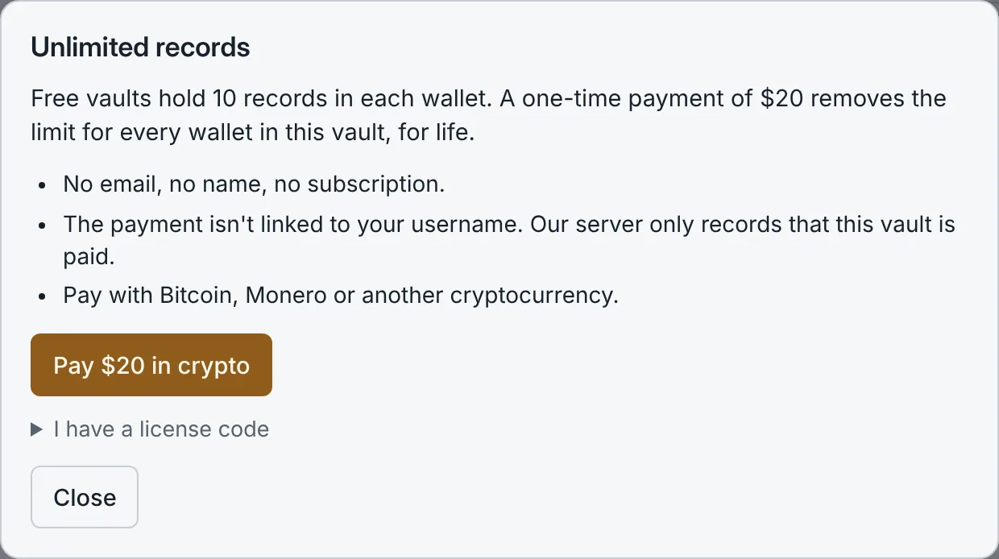

pswrds is a password manager built so that we can't look inside. Your passwords are encrypted on your own device before anything is sent to us, and we never receive your passphrase. This page explains what that means in practice, how to use pswrds, and where its limits are.
A place to keep your logins: the website or app, the username and the password, and a note for things like security questions or recovery codes. You open it with a username and one passphrase, from any browser, on any device.
What makes it different is that the server stores only scrambled data. Locking and unlocking happens in your browser, so the people who run pswrds can't read your passwords, can't reset your passphrase, and can't even see how many passwords you keep.
Anyone who wants their passwords in one safe place without handing them to a company that can read them. It suits people in particular who:
No. You choose a username and a passphrase, and that's all. We don't ask for an email address, a phone number or your name, so there is nothing to leak, sell or link to you.
The flip side: there's no "forgot your passphrase" email either. See Your passphrase.
Open pswrds.com, choose New vault, pick a username and a passphrase of at least 10 characters, and confirm that you understand there's no recovery. You can add your first login right away. To come back later, use Unlock with the same username and passphrase.

Yes. pswrds works in any modern browser on a phone, tablet or computer. In Chrome and Edge an Install app button appears at the top, which adds pswrds to your home screen or app list. On an iPhone or iPad, open pswrds in Safari, tap Share, then Add to Home Screen.
Your vault lives on our server in encrypted form, so it's the same on every device. Nothing is kept on the device itself.
It means we know nothing about what's in your vault. Your passphrase is turned into an encryption key inside your browser, and your records are encrypted with that key before they leave your device. We only ever receive the encrypted result, and we never receive your passphrase or the key. Without them, the data is unreadable, to us and to anyone who gets hold of our server.
Every vault is stored the same way: a fixed amount of encrypted data that looks like random noise. A vault with one password and a vault with three hundred look identical.
Your data is padded with random bytes to a fixed size before it's encrypted, so not even its size gives anything away. Your IP address isn't stored either: to stop abuse, the server briefly keeps a scrambled (hashed) version of it, then discards it.
The full technical details, including what pswrds does and doesn't protect against, are on the security design page, and the source code is public on GitHub.
No. We don't have your passphrase or key, so we have no way to decrypt your vault. We also can't tell how many passwords you store or which sites they're for.
They would get the same thing we have: encrypted data and username fingerprints. To read a vault they would have to guess its passphrase, and each guess costs 600,000 rounds of hashing. With a long, unique passphrase that is not realistically possible. With a short or common one it might be, which is why the passphrase you choose matters most.
Your passphrase is never sent to us, so it can't be stolen from our server or handed over by us.
No. pswrds sets no cookies and runs no analytics, ads or tracking scripts. The statistics we keep are simple counts, such as how many vaults exist and how many were created this week.
Each entry is a record: a name such as "Bank", one or more logins (a username or description with its password), and an optional note. Records are sorted alphabetically and you can search them. Passwords stay hidden until you press the eye, and the copy buttons put a username or password on your clipboard without showing it.

Yes. When you add or edit a record, the dice button next to the password field creates a random 20-character password. It's generated in your browser with its cryptographic random number generator.

Copying is convenient, but the clipboard is shared with other apps on your device, and some phones and computers sync it to other devices. Paste the password where you need it, then copy something else to clear it, especially on a shared computer.
Yes. Press Back up next to the wallet name to save a backup file. It's the vault exactly as our server stores it: encrypted, and useless without your username and passphrase. Keep it somewhere safe, such as a USB stick or your own cloud storage.
To use it, choose Open a backup file on the unlock screen. The backup opens in your browser, even if pswrds.com were ever unreachable. If your vault no longer exists on pswrds.com, you can restore it from there in one click. Lifetime access isn't part of a backup.
Yes. If you change the same wallet on two devices at the same time, the second save is refused instead of overwriting the first: pswrds loads the latest version and asks you to make your change again. Nothing is lost.
Yes. After 10 minutes without activity your vault locks automatically and everything decrypted is cleared from the page. You can also press Lock at any time. Reloading or closing the page locks it too.
Yes, on devices that support it: recent iPhones and iPads (iOS 18 or later, in Safari), Android phones with Chrome, and Macs with Touch ID. Unlock with your passphrase once, press Fingerprint next to the wallet name and confirm with your fingerprint or face. From then on the unlock screen on that device shows Unlock with fingerprint.
Your fingerprint never leaves your device and we receive nothing new. The device keeps a locked copy of your wallet's key that only your fingerprint or face can open. Set it up separately on each device; changing your passphrase turns it off, and you can turn it off yourself at any time.
Keep in mind that anyone who can unlock your phone with your finger or face can then open your vault too. It's best for everyday logins. For your most important passwords, keep typing the passphrase.
Unlock your vault and press Change passphrase next to the wallet name. Enter your current passphrase, then the new one twice. Your records stay as they are; only the lock changes.
One thing to know: copies of your vault made before the change, such as the hosting company's backups, can still be opened with the old passphrase until those backups expire. If you think your old passphrase is known to someone, change it, and also change the most important passwords inside.
On a computer you don't control, such as at an internet café, a hotel, a library or a borrowed laptop, a hidden program called a keylogger may record every key you press. If you type your passphrase there, it can be stolen.
The keyboard button next to the passphrase field opens a keyboard on the screen. You enter your passphrase by clicking or tapping keys instead of typing, so a keylogger gets nothing. The keys are shuffled into a new order after every click, so even a program that records where you click can't work out which characters you chose. Keys don't light up when pressed, which gives a screen recording less to go on.

The keyboard also works for searching and for entering records, so you can use pswrds on an untrusted computer without typing anything sensitive.
Safer, not safe. The on-screen keyboard defeats keyloggers and click loggers, but a computer that is seriously compromised can still record the screen or read the page after you've unlocked it. On a computer you don't trust, open only what you need, use the on-screen keyboard, lock when you're done, and change the passphrase later from a device you trust if you're worried.
Then your vault can't be opened again, by you or by us. There is no reset link, no support trick and no back door. That's the price of a vault nobody else can open.
Write your passphrase down and keep it somewhere safe at home, or memorise it well before you rely on pswrds.
harbor lantern velvet orbit, are far stronger than P@ssw0rd! and easier to remember.pswrds requires at least 10 characters, but longer is better.
You can use pswrds for free with up to 10 records. For unlimited records, there's a one-time payment of $20 for lifetime access for that vault. There's no subscription and nothing to renew.
If you reach the limit, nothing is locked away: you can still view, copy, edit and delete everything. Only adding new records waits until you upgrade.

You pay in cryptocurrency, such as Bitcoin or Monero, on a payment page from our payment provider. The payment is created without your username: our server never tells the provider which vault is paying. When the payment is confirmed, your vault is unlocked automatically and you see a license code as a receipt. Our server only records that the vault is paid, not which payment paid for it.
Confirmation takes a few minutes for most coins, and up to an hour for Bitcoin when the network is busy. You can close the window while you wait: the upgrade finishes the next time you unlock your vault.
Some wallets subtract their network fee from the amount sent, and crypto prices move while a payment confirms. A payment that arrives slightly short still counts. If something went wrong and your vault isn't unlocked, email the payment ID from the payment page to info@pswrds.com. We'll check the payment and send you a license code, which you enter under I have a license code in the upgrade window.
Some features are offered by invitation while we develop them: duress passphrases, decoy vaults and hidden wallets. If you don't have a code, leave the field empty: you get the complete password manager described on this page.
Write to info@pswrds.com. Please never send us your passphrase: we don't need it, and nobody from pswrds will ever ask for it. The terms of use and privacy policy are short and in plain language.
https://pswrds.com before you unlock.Want to see it before you sign up? Create a vault with a test passphrase and a few made-up records. It's free.
Open pswrds